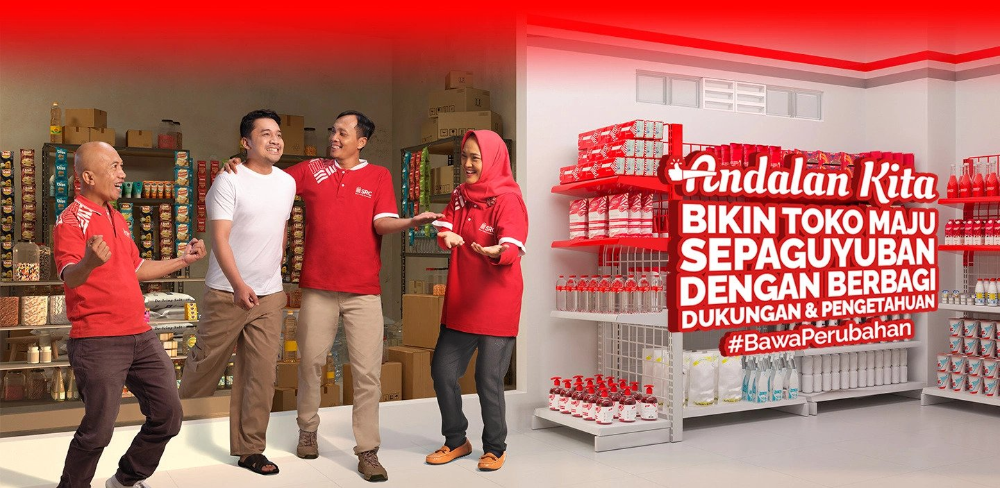
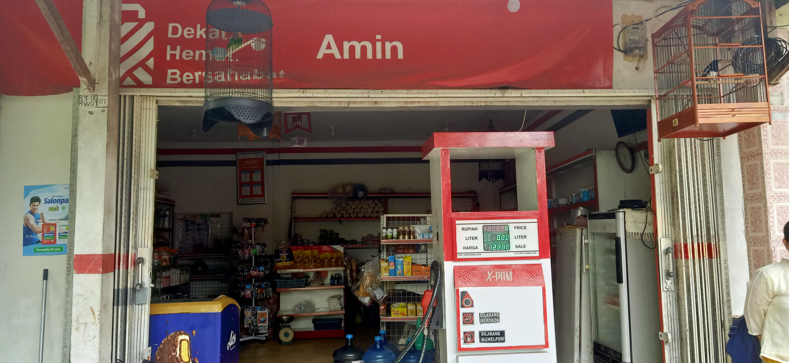

Salam Kenal dari Kami, Komunitas Toko Kelontong SRC
SRC adalah Toko Kelontong Masa Kini yang tergabung dalam program kemitraan PT SRC Indonesia Sembilan (SRCIS), bertujuan untuk meningkatkan daya saing UMKM toko kelontong melalui pendampingan usaha yang berkelanjutan. Dilengkapi dengan ekosistem digital AYO SRC, memberikan kemudahan bagi pemilik Toko Kelontong SRC untuk bersaing di era transformasi digital, serta memberikan pengalaman berbelanja yang lebih menyenangkan bagi Pelanggan SRC.
Toko Kelontong SRC yang hadir di sekitar lingkungan kita, berperan penting untuk memenuhi berbagai kebutuhan masyarakat sekitar dengan harga yang terjangkau. Melalui aplikasi "AYO SRC". Toko Kelontong SRC dapat melakukan pemesanan berbagai produk kebutuhan melalui Mitra SRC dengan lebih efisien. Sebagai pemakai barang/ jasa dalam kebutuhan sehari - hari yang disediakan oleh Toko Kelontong SRC, pelanggan SRC mendapatkan kebutuhan secara lengkap dengan harga yang terjangkau.